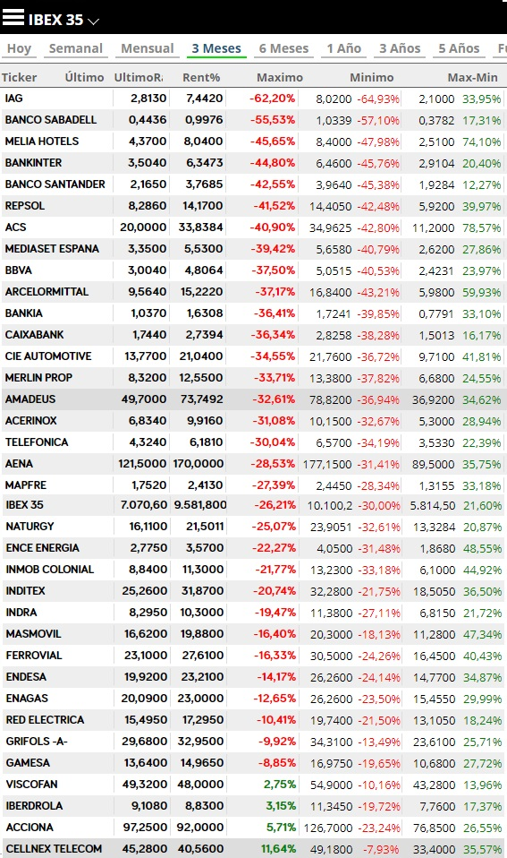
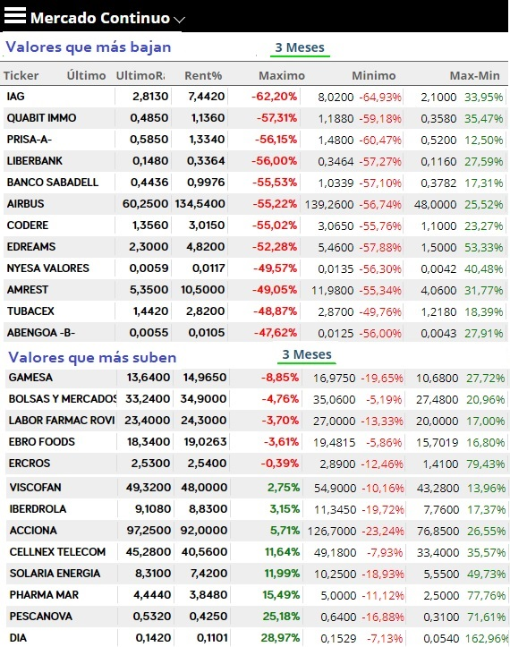

Desde la crisis financiera de 2008, todos los índices han recuperado las pérdidas y han logrado superar sus máximos. En el caso del IBEX35 no es así si no contamos los dividendos que dan las empresas. El DAX30 por ejemplo cuenta en su índice esos dividendos. Sin embargo el IBEX35 es el único casi menor recuperación ha tenido. Esto es así debido a la burbuja de la construcción el la que estuvo sumergida durante casi una década lo que hizo irreal el indice de crecimiento de PIB y riqueza del país. Además se ha pasado por otras malas situaciones que son consideradas como pequeñas correcciones del índice como el brexit, la crisis del petróleo de 2016, o la inestabilidad debido al problema en Cataluña donde debido al obsoleto sistema electoral español una parte pequeña de la población del 5% puede marcar la hoja de ruta de todos los españoles. Este problema siempre será aprovechado tanto por la derecha española para sembrar odio así como por la propia burguesía catalana que se enriquece a costa de todos. Desde 2017 han venido dos años de turbulencias debido a este motivo y agravado con los resultados de las elecciones en 2019 que hacen que la economía no pueda volver a despegar.
Una vez pasada la crisis financiera España a duras penas podía contener la segunda crisis, la del paro con tasas de desempleo muy por encima de cualquier país de la zona euro llegando a máximos del 26% y en algunas zonas de España este dato aumentaba hasta más del 50% de la población. Una vez llegado del fin de la crisis como se ve en el gráfico se llegarían a tocar los 6000 puntos. Ese mínimo es decisivo ahora mismo porque estaba fuera del triángulo que ha seguido estos 10 años y es el que va a marcar el nuevo triangulo venidero. Esto es así porque con el COVID hemos perdido el soporte que se encontraba en los 8700 puntos.
Tras la bajada provocada por el pánico de las bolsas en general, con el coronavirus como protagonista, el IBEX35 llego a bajar casi la mitad de su valor desde máximos, estando cerca de los 5500 puntos.
El día después de esta caída, BME, anunciaría la medida de prohibir las posiciones cortas al igual que otros países europeos que lo habían hecho con anterioridad. Esto pararía la sangría y haría que el IBEX experimentará un pequeño rebote entorno a los 6.000 puntos.
Tras un rápido rebote que vendría sobre todo influenciado por el rebote de los índices americanos se estabilizaría entorno a los 6400 puntos, construyendo un sólido soporte. Los valores más castigados serían las aerolíneas y los bancos, si bien casi todos los valores del IBEX caerían una media del 50%.
Si nos limitamos a realizar un análisis pormenorizado y miramos el gráfico comparativo entre mediados de enero y mediados de abril donde todavía estaba lejos de llegar el caos a Europa vemos como las empresas que más han sufrido son los bancos, las aerolíneas y empresas de turismo como cadenas hoteleras y agencias de viaje. Las empresas más fuertes son las que estaban arrojando mejores resultados como Iberdrola, Acciona y Gamesa. Estas últimas estaban ya bastante caras pero son muy solventes y no les afecta apenas esta crisis por lo que el covid19 ha sido la oportunidad perfecta para que muchos fondos aumenten su posición. Y es que en períodos de incertidumbre lo mejor es estar en posiciones sólidas.


Si bien si nos preguntamos donde invertir cuando la crisis, es decir, el coronavirus haya desaparecido y se vuelva a la normalidad habrá que buscar valores que hayan bajado mucho debido a que antes del covid19 las cuentas no habían sido buenas, o que esten en apuros financieros o bien que el beneficio de la empresa estuviera ligado a acontecimientos que todavía no habían sucedido, es decir, empresas con incertidumbre en su porvenir. Durante la crisis se ve que los únicos beneficiados han sido los supermercados que debido al cierre de restaurantes y pequeños comercios se han quedado con toda la cuota de mercado. Ese es el caso de , auténtico protagonista del COVID con un incremento desde los 0,05 euros hasta los 0,15 euros actuales (casi un 200% de beneficio desde mínimos) así como las empresas vinculadas al sector sanitario o farmacéutico como pueda ser Pharmamar.
A corto plazo preveeo como había dicho al principio una corrección inminente y posteriormente una lenta subida. En el siguiente gráfico muestro como veo la posible subida tras el rebote y la corrección.
De acabar el confinamiento en Mayo y retomar la actividad ecónomica se podría preveer una bajada del PIB este año de entorno al 15%, en caso de que durará más podrá aumentar, si bien habra que contar en verano hasta que punto afecta el que haya menos turistas extranjeros. En caso de que disminuya el 50% de las llegadas el PIB podría caer fácilmente un 25% y España entrar en recesión técnica.
Al ser un país principalmente de servicios sin una gran actividad industrial como otros países de nuestro entorno España va a llevar un golpe duro por esta crisis concreta, si bien muy reducida a este año.
Habrá que estar atento a los posibles resistencias dadas por fibonnaci y por los posibles escalones que vaya dejando el índice según transcurra el tiempo. Lo más posible es que al año que viene si volvemos a crecer como anterioridad podamos recuperar el valor en menos de 2 años. Lo peor de la crisis ya ha pasado en España aunque esta por ver como acaba en Estados Unidos.
Respecto a valores a vigilar, 7500 y los 8300 como posibles máximos hasta finales de año, y en torno a los 7100, (valor actual como posible soporte).
Usando este sitio web aceptas nuestros Terminos y condiciones. Por favor Aceptar esto antes de usar el sitio web.
© 2016 - All Rights Reserved - Diseñada por Sergio López Martínez
El sitio se mantiene gracias a la publicidad, por favor Desactiva Adblock para seguir navegando
He desactivado Adblock![[Valid RSS]](https://www.feedvalidator.org/images/valid-rss-rogers.png "Validate my RSS feed")